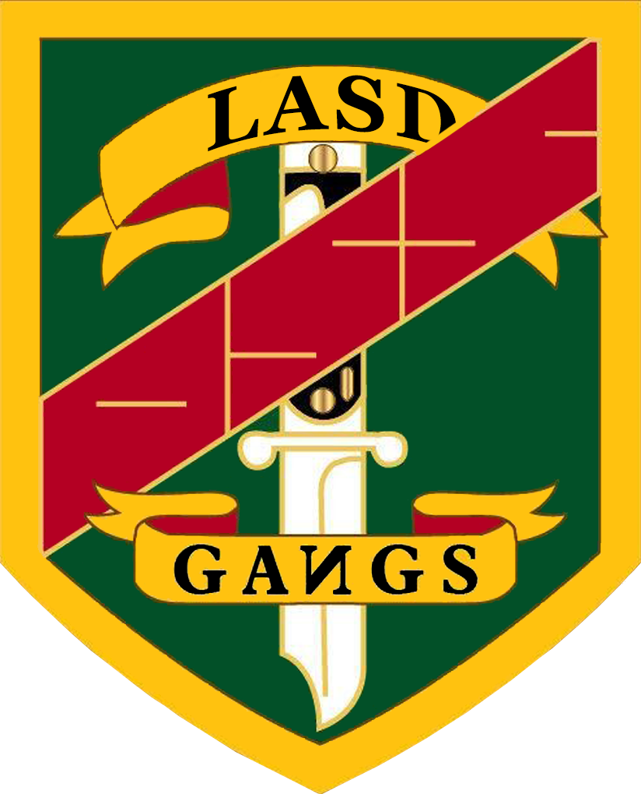
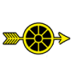
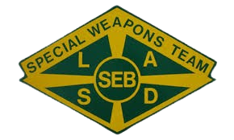
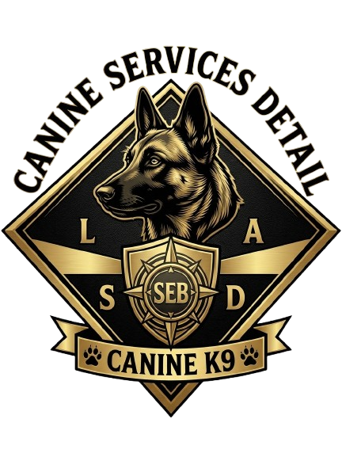
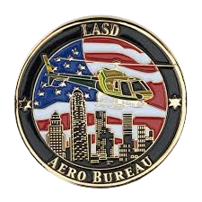

Hizmetin Geleneği
Devam Ediyor
İstasyonumuz, disiplin, profesyonellik ve kamu güvenliği ilkeleri doğrultusunda Los Angeles County genelinde vatandaşların güvenliğini sağlamak için kesintisiz hizmet vermektedir.
Komuta Kadrosu
İstasyonumuzu yöneten liderlik ekibimiz ve operasyonel yönetim yapısı.
"Disiplin, sadakat ve topluma hizmet — bunlar bir şerif memurunu tanımlayan üç temel ilkedir."
Sergeant Allan Houser liderliğinde istasyonumuz, operasyonel başarıyı ve personel gelişimini esas alan bir yönetim anlayışı ile faaliyet göstermektedir. Komutanımız, her görevin en yüksek standartlarda yürütülmesini ve Los Angeles County sakinlerinin güvenliğinin kesintisiz sağlanmasını birincil öncelik olarak benimsemiştir.
İstasyonumuz, Komutanımızın öncülüğünde hem operasyonel etkinliği artırmak hem de toplum ile yürütme kuvvetleri arasındaki güven bağını pekiştirmek amacıyla sürekli gelişen prosedürler ve modernize edilmiş ekipmanlarla donatılmaktadır.
Ekipten Fotoğraflar
Personelimizin sahada ve eğitimde gösterdiği fedakârlık ve profesyonelliğin yansımaları.
Devriye Faaliyetleri
Günlük devriye görevlerinden ve bölge güvenliğinden alınan anlık görüntüler.
Özel Operasyonlar
Yüksek riskli operasyonlar, planlı müdahaleler ve SEB faaliyetleri.
Eğitim Süreçleri
Personellerimizin düzenli eğitim faaliyetleri ve akademi müfredatı.
Toplum Destek Programları
Vatandaşlarla gerçekleştirilen etkinlikler ve bilgilendirme faaliyetleri.
Ekipten Videolar
Birimlerimiz
Eğitimini başarıyla tamamladıktan sonra, kendi yeteneklerine ve ilgi alanlarına göre farklı bürolarda görev alma şansın olacak. Aşağıdaki tüm birimler aktif olarak faaliyetlerini sürdürmektedir.

👮♂️Operation Safe Streets
Sokak suçlarını ve organize suç örgütlerini hedef alan özel soruşturma birimi. Bölge güvenliğini tehdit eden yapılara yönelik operasyonlar yürütür.

👮♂️Traffic Services Detail
Trafik denetimi, kaza soruşturması, trafik ihlali takibi ve yol güvenliği etkinliklerinden sorumlu trafik hizmetleri birimi.
Internal Affairs Bureau
Personel davranışı, etik standartları ve iç disiplin süreçlerini denetleyen birim. Kurumsal bütünlüğü ve hesap verebilirliği güvence altına alır.

Centrol Patro
İstasyonun temel operasyonel gücünü oluşturan devriye birimi. 7/24 saha güvenliğini sağlar, olay müdahalesi ve bölge kontrolü yapar.
CIT - Crime Impact Team
Bu birim, belirli bölgelerdeki(Çete bölgeleri) şiddet olaylarını ve suç artışlarını hedef alan, genellikle bir çavuş ve 6-8 çete memurundan oluşan proaktif özel operasyon ekiplerinden oluşur.

👮♂️SEB (Special Enforcement Bureau)
Yüksek riskli operasyonlar ve planlı müdahaleler için görevlendirilen seçkin taktik birim. SWAT yetenekleriyle donatılmıştır.

👮♂️K-9 Unit
Özel eğitimli K9 köpekleri ve işleyicilerinden oluşan birim. Uyuşturucu tespiti, iz takibi ve özel arama operasyonlarında görev yapar.
Sheriff’s Information Bureau
Sosyal medya ekibi

👮♂️Aeuro Bureau
Hava gözetleme, arama-kurtarma ve taktik destek operasyonları için görevlendirilen helikopter ve hava araçları birimi.
Son Duyurular
İstasyonumuza ait güncel duyurular, atamalar ve operasyonel bilgilendirmeler.